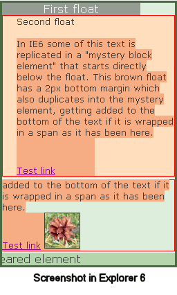

This bug occurs only in IE6 and has been fixed in IE7
Internet Explorer 6 has a puzzling bug involving multiple floated elements; text characters
from the last of the floated elements are sometimes duplicated below the last float. This bug
is a real headbanger because there seems to be nothing triggering it. However, by now everyone
should know that IE needs no excuse to misbehave.
The direct cause is nothing more than ordinary HTML comments, such as,
<!-- end left column -->,
sandwiched between floats that come in sequence. Apparently, the comments are hard for IE to
digest when they occupy those positions, resulting in a kind of "screen diarrhea". HTML
comments inside the floats do not cause the bug, nor do comments before or after the float
series. Only comments residing between floats cause the bug.
The effect seen is that some of the last characters from the last floated element of the series
are repeated outside and below that floated element. The first sandwiched comment does nothing
unusual, but two comments cause the last two characters in that last float to repeat. Each
additional comment makes two more characters join the party. It doesn't matter which pair of
floats straddle the comments. In fact the two triggering comments may follow
different floats as long as they have floats both before and after them.
So Let's See This Bug!
This live demo's construction starts with a 250px wide container
(green border), holding first a 200px wide float (gray), and a second (light brown) float, which is
given a width of 250px, the same as the container's width. Inside that second float is a red bordered
paragraph containing spanned text, and an image just for fun. The span is not required for the bug to
occur, but is used here to help illustrate the bug. Finally there is a simple "cleared" block element (green).
Additionally, there is a 2px bottom margin on the lower float to push the duplicated text down and make
the demo slightly less confusing.
If you look at the source of this page, you will see 50 ordinary HTML comments in between the
two floats. The first one is "free," but each of the remaining comments will trigger the replication
of two characters from the last float into the area just below it. The bug considers the image to be
worth two characters when duplication is occuring. The length of the text in the comment does not
matter. We know that no one is likely to be putting 50 comments in between floats, but in this case,
they sure make the demo more dramatic!
Below is a simplified version of the code used to make this live demo:
<div class="demobox" >
<div class="firstfloat">First float</div>
<!-- comment --> <!-- comment --> <!-- comment -->
<!-- comment --> <!-- comment --> <!-- comment -->
etc, etc, etc... (50 in all)
<div class="secondfloat">
<p>
Second float
<span>
In IE6 some of this text is replicated in a
"mystery block element" that starts directly
below the float. This tan colored float has a
2px bottom margin which also duplicates into
the mystery element, getting added to the
bottom of the text if it is wrapped in a span,
as it has been here.
<a href="#">Test link</a>
<img src="images/pinecone3.jpg" alt="" />
</span>
</p>
</div> <!-- End of second float -->
<div style="clear: both;">Cleared element</div>
</div> <!-- End of .demobox -->
Important: These extra comments trigger the bug only
when the final float fills the container to the right edge, or to within less than 3px away from it.
This is because IE6/win seems to have a weird 3px "bumper" margin on the right side of that last left
float. Since the float in this demo is exactly as wide as the container, the bumper has no empty space
to occupy, and apparently it is this that completes the bug trigger. The effect also shows
symmetry, working the same way in a mirror version of this coding.
Note that if the floats were horizontally next to each other and their widths when added together
equaled the container width, the bug would still be triggered. Also remember that when many floats are
involved, it doesn't matter which floats the comments fall between, as long as they are between any
floats in the set. The comment bug triggers accumulate!
Update! July 5, 2004
— It turns out that this duplicating characters bug can be triggered
by other things than just HTML comments.
Phil Baines points out that any
elements given the style {display: none} will also induce the bug. In fact,
even hidden inputs can do it, and presumably any other elements that don't actually
display for some reason. Apparently the act of hiding a source element is the
critical trigger for this bug.
Nice catch, Phil!

Even More Weirdness
Notice what happens when the duplicated link is hovered, causing a background change.
Both the real link and its clone show the hover effect, and hovering makes some of the
duplicate text show the padding from the donor float's paragraph! Most kinds of hover
changes on the link will do this, but not all. Every IE bug that involves hover changes
seem to be triggered by the same style alterations. Changing the font doesn't do it,
but applying a background on hover does.
Check out what happens to the image! Oh dear. Say, what about the red border showing up around the
duplicate text? Is the paragraph itself being cloned as well? Are you getting dizzy yet?
Another thing to notice is the text in the green clearing element. The text actually says
"Cleared element", but it is partly lost on the left side! The length of missing text is
exactly the same as the width of the left padding on the donor float paragraph. Arrrgh! You
may not want to hear this, but upon hovering either link, the bottom margin on the float is
replicated below the cleared element...
Okay, we'll stop now.
Fixes and Workarounds
One easy fix is to put a -3px right margin on the last left float. The
opposite can be done for layouts with right floats. This seems to be a harmless fix that works
every time. Another fix is to give the container element 3px of extra width, so that it is 3px
larger than the last float. Sometimes applying
hasLayout
on the cleared element will stop the text
duplication, but not the "Reverse padding bug" in the cleared element.
Or, you could just remove the bug triggering comments, but that would be cheating, wouldn't it?
Update! April 25, 2006 One of our
more deviously-minded readers,
Victor Welling,
has discovered that
Conditional Comments
may be used in place of normal HTML comments without triggering this bug!
It works because CC's allow the use of the naught sign (!), so you can specifically
tell IE/Win to ignore the CC, while other user agents simply treat the CC as a
normal comment as usual. Here's an example:
<!--[if !IE]>Put your commentary in here...<![endif]-->
The critical part is that "..if !IE.." bit. That tells IE to not look into the
CC, as it would otherwise do without the naught sign.
Okay, this is very weird. Presumably IE sees elements that it is supposed to hide
such as hidden inputs and normal comments, and when they appear in certain locations
it somehow triggers the duplication bug. And this CC does make IE hide what is
inside, just like all other browsers. So what makes IE treat this comment differently than
normal comments? Don't ask such silly questions! It's IE, remember? Oh
well, as long as it validates and gets the job done, right?
This method allows Victor (and you too) the ability of retaining all buggy comments
right where they are, with no compromise and just a bit more code. Thanks Victor!
Update! September 7, 2006
Brett Merkey
points out that the
Doubled Float Margin Bug Fix
may be used to stop this duplicate characters bug! Who knew? As always, that fix
is used on floats and does not affect floats, according to the W3C. However, just
like the doubling bug it fixes this duplicating bug when it is applied to the float
that comes before the triggering comments. Thanks Brett!
The fix itself is simple, just add display: inline; to the
float that preceeds the comments, or you can just globally apply it to all
floats. So far there have been no apparent side effects when doing this. If all
floats are given the fix at all times, several known IE bugs will be prevented while
no other known effects occur. If you do this and ever notice any odd side-effects,
please contact us, okay?
Conclusion
This problem can appear in different ways, but it usually involves text duplicated out of the
last float in a float series, and two or more HTML comments between the float elements.
For masochists, check out yet another version
of the duplication effect, discovered by Jennifer Niederst. Is there no end...?
Big John Design
Contact Us
©positioniseverything.net
Last updated: May 12, 2010
Created February 18, 2004